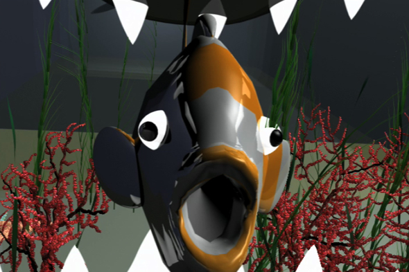

Design Programs
Animation Program
What is Animation?
Animation is the process of making the illusion of motion and the illusion of change by means of the rapid display of a sequence of static images that minimally differ from each other. The illusion as in motion pictures in general is thought to rely on the phi phenomenon. Animators are artists who specialize in the creation of animation. Animation can be recorded with either analogue media, a flip book, motion picture film, video tape, digital media, including formats with animated GIF, Flash animation and digital video. To display animation, a digital camera, computer, or projector are used along with new technologies that are produced.
2D Animation
2D animation figures are created or edited on the computer using 2D bitmap graphics or created and edited using 2D vector graphics. This includes automated computerized versions of traditional animation techniques, interpolated morphing, onion skinning and interpolated rotoscoping.
3D Animation
3D animation is digitally modeled and manipulated by an animator. The animator usually starts by creating a 3D polygon mesh to manipulate. A mesh typically includes many vertices that are connected by edges and faces, which give the visual appearance of form to a 3D object or 3D environment.Sometimes, the mesh is given an internal digital skeletal structure called an armature that can be used to control the mesh by weighting the vertices. This process is called rigging and can be used in conjunction with keyframes to create movement.
Follow us